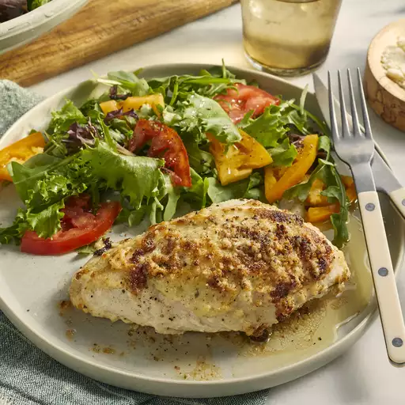

Mayo Chicken

Ingredients
- 1 whole chicken, cut into 6 pieces
- 1 cup mayonnaise
- 2 cloves garlic, crushed
- 1 tablespoon finely chopped fresh rosemary
- 1 teaspoon salt
- freshly ground black pepper to taste
- 1/2 cup grated Parmesan cheese
Steps
- Preheat the oven to 350 degrees F (175 degrees C).
- Place chicken pieces into a 9x13-inch baking dish.
- Stir together mayonnaise, garlic, rosemary, salt, and black pepper in a bowl.
- Spread mayonnaise mixture over chicken; top with Parmesan cheese.
- Bake until no longer pink in the center and the juices run clear, about 1 hour and 10 minutes.